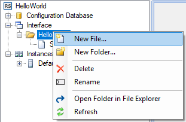
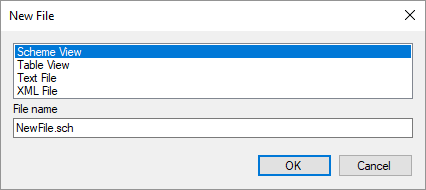

Figura 3. Edición de la tabla Interfaz
Una vista es una forma de representación de datos en la aplicación Webstation. Existen dos tipos de vistas soportadas por defecto: vistas de tablas y vista de esquemas. Es posible agregar soporte para otros tipos vistas instalando complementos (plugins) adicionales.
Table Editor (Editor de tablas) y Scheme Editor (Editor de esquemas) fueron diseñados para crear las vistas. Las mismas se guardan en archivos que deben estar ubicados en el directorio de la Interface de un proyecto. Durante la ejecución, las vistas están ubicadas en el directorio Interface especificado en la configuración de la aplicación Server o en sus subdirectorios. Por defecto C:\SCADA\Interface\
Son ejemplos de archivos de vistas:
Interface\Servers\ServerRoom.sch - esquema,
Interface\Servers\ServerRoom.tbl - vista de tabla.
Para abrir el formulario de creación de una vista, tras haber seleccionado su proyecto en el Administrator, vaya a Interface y haciendo clic derecho, seleccione New file (Nuevo archivo) (refiérase a las figuras 1 y 2). Luego, en el formulario que aparece, seleccione el tipo de vista deseado (en este caso Scheme View), escriba en “File name” el nombre del esquema a crear y haga clic en el botón OK. El archivo creado será mostrado en el explorador de proyectos. Haciendo doble clic en el nodo del árbol correspondiente, el editor abre la vista y la puede confeccionar, o puede editarla si era una vista ya creada.

Figura 1. Menú para crear una vista

Figura 2. Diálogo de creación de una vista
Después de crear los archivos de vistas, éstos deben ser declarados en Administrator - Configuration Database - System - Interface como se ve en la figura 3. Los identificadores de vistas deben ser únicos. La ruta (Path) de las vistas debe corresponder con la de su ubicación en el directorio C:\SCADA\Projects\“su projecto”\Interface. El texto especificado en la columna Title (Título) aparecerá en la aplicación Webstation, como un nodo en el árbol del explorador (izquierda), y los identificadores en columna ID determinan el orden de las vistas. Si los archivos de vistas están ubicados en los subdirectorios del directorio Interface, estos subdirectorios también deben estar especificados en la tabla Interface.
Figura 3. Edición de la tabla Interfaz
Los esquemas admiten el modo de plantilla. Una plantilla de esquema es un esquema cualquiera creado en Scheme Editor, cuyos componentes pueden vincularse con canales de entrada y de salida arbitrarios..
Para usar un esquema en el modo de plantilla, especifique los argumentos apropiados en la tabla Interface. Hay dos opciones disponibles (vea la Figura 4):

Figura 4. Plantilla de esquema en la tabla Interface
Descripción de los argumentos:
inCnlOffset - desplazamiento (offset) del número de canal de entrada;
ctrlCnlOffset - desplazamiento del número de canal de salida;
titleCompID - identificador del componente título;
bindingFileName - nombre del archivo de los enlaces en relación al directorio de
configuración de Webstation.
El texto del título de un esquema trabajando en el modo de plantilla se toma del campo Title de la tabla Interface. Al crear una plantilla de esquema con el Scheme Editor, se recomienda dejar la propiedad del título del esquema en blanco.
Los archivos de enlace deben estar ubicados dentro del directorio de configuración de Webstation, por defecto en C:\SCADA\ScadaWeb\config\. Ejemplo de un archivo de enlace:
<?xml version="1.0" encoding="utf-8" ?>
<TemplateBindings>
<TemplateFileName>MyScheme.sch</TemplateFileName>
<TitleCompID>3</TitleCompID>
<Binding compID="1" inCnlNum="101" ctrlCnlNum="101" />
<Binding compID="2" inCnlNum="102" />
</TemplateBindings>